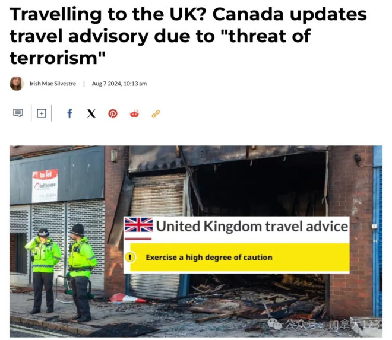

由于英国各地暴力骚乱持续，加拿大政府周三（8月7日）更新对英国的旅游警示，提醒国民前往英国时需“高度谨惕”。
根据加拿大全球事务部（Global Affairs Canada）周三公布的更新，提升了前往英国旅行的风险等级，警告国民，由于恐怖主义威胁，在英国必须“保持高度警惕（Exercise a high degree of caution）”。
自7月30日以来，一起致命的持刀砍人事件和随后的反移民虚假宣传触发了英国各地的暴力骚乱，从街头到政府领导人的办公室，气氛十分紧张。
是什么引发这场暴力骚乱？
上周一（7月29日），在利物浦附近的海滨小镇绍斯波特，一名17岁男子持刀袭击了一个儿童舞蹈班，造成3名儿童死亡，另有多人受伤。
这名涉案嫌犯在英国出生和长大，警方并没有将事件视为恐怖袭击。但网上很快就有传言称他是穆斯林移民。为了反驳这些虚假谣言，英国当局采取了不寻常的措施，公开了他的身份。但在英国，移民问题是一个热点问题，尤其是在极右翼势力中，只要有谣言就已足够。
极端组织呼吁追随者走上街头，从7月30日开始，伦敦、利物浦、布里斯托尔、赫尔、曼彻斯特等多地发生反穆斯林反移民抗议活动，并演变成暴力骚乱事件。
上周末，英国有十几个城市出现街头抗议，其中大多数在英格兰。北爱尔兰的贝尔法斯特也被卷入其中。周日（7月4日），暴徒们冲进英格兰北部罗瑟勒姆镇一家为寻求庇护者提供住宿的酒店，砸碎窗户，蜂拥而入。
7月4日，反移民抗议者在英格兰罗瑟勒姆与警察对峙（图源：路透社）
在米德尔斯堡，一群戴面具的暴徒向警察投掷瓶子和石块。汽车被点燃，至少九人被捕。上周六，利物浦的一家图书馆和一间食物银行被人纵火，一些人破坏和抢劫了商户。在赫尔市中心发生了纵火和店面被砸事件。
英国警方已派遣近4000名警察应对事件，并且一支由6000名专业警察组成的后备军，计划本周介入。警方消息指，周末有近150人被捕，数十名警察受伤，其中一些人需要送医。
另据英国皇家检察官文卡塔萨米（Kris Venkatasami）公布的数据，自冲突开始以来，已有400多人被捕，120多人被起诉，罪名包括煽动种族仇恨。
警方认为，网上的虚假信息是“这起骇人听闻的暴力事件的重要推手”。
尽管当局誓言要打击暴力，但他们长期以来一直难以遏制社交媒体上的虚假信息，而这正是骚乱背后的催化剂之一。英国和其他民主国家已经发现，对互联网的监管在法律上是一个模糊的领域——既要保护个人权利和言论自由，又要阻止有害信息。
英国首相斯塔默上任仅一个月，他所在的工党击败了在英国执政14年的保守党，这次骚乱是他遭遇的首次政治危机。
前保守党政府执政期间曾试图利用公众对移民的不满，发誓要减少移民。但最近几天，他们与工党一起谴责暴力抗议事件。
截至周三（8月7日），英国警方已注意到，全国已有超过100场极右翼抗议和30场反抗议活动。
加拿大全球事务部周三表示：“即使是和平示威在当地也可能随时变得暴力。过去几天抗议者和安全部队之间的暴力冲突已导致了袭击、骚乱、抢劫和破坏。抗议可能迅速恶化。”
加拿大全球事务部还敦促前往英国的游客注意周围环境，特别是在参加大型集会如体育赛事、公共庆祝活动和政治活动时。因为公共场所如旅游景点、购物中心、市场、酒店、学校、机场、交通枢纽和宗教场所都是可能的暴力袭击目标。
加拿大政府的旅行警示共分四级，从低到高分别为：采取正常安全预防措施（Take normal security precautions），保持高度警惕（Exercise a high degree of caution），避免非必要旅行（Avoid non-essential travel）、避免所有旅行（Avoid all travel）。